Hunter - A jason that has came back for revenge.
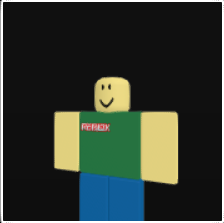
Noob - The weakest enemy, easy to defeat but annoying in large numbers.
Damage - around 20.
Health - around 100.
Skills - stalks player and punches.
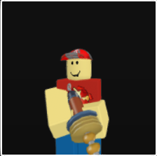
Gunman - A enemy like noob but with more health and with a gun, can shoot you from a distance.
Damage - around 20, just like noob.
Health - around 150.
Skills - shoots an projectile that flies on its trajectory.
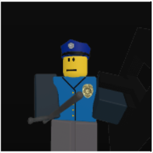
Bobby - A enemy like noob but 3x more heath with shield that add plus 400 hp.
Damage - around 20, 35 when charging .
Health - around 300, +400 with shield.
Skills - Swings a batton and has a shield that si neraly invincible, also can charge with shield if player is out of range or far away.
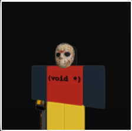
Jason - A first Boss of the game, has a lot of health and can
Damage - 25 with normal slash, 40 with chainsaw lunge, 30 per second with chainsaw throw, and 30 with chainsaw spin. .
Health - 7000.
Skills - Chainsaw slash - Normal slash with the chainsaw, can be parried, Chainsaw lunge - jason spins around with the chainsaw, can be parried, chainsaw throw - chainsaw spins around the jason in circle, only attack that cant be parried.
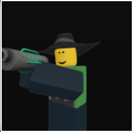
Emerald Blaster - A enemy that is like a gunman but better as he shoots 6 projectiles that fly on triangle trajectory instead of 1 at you , can be parried but is hard to do so.
Damage - around 25 per projectile.
Health - around 250.
Skills - shoots 6 projectiles that fly on triangle trajectory.
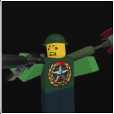
Trooper - A enemy that have three types of attacks and pretty annoying .
Damage - around 20 with rifle burst, 25 with rifle bash, 30 with rocket.
Health - around 300.
Skills - first one, shoots a burst of 3 bullets, second one, bashes with rifle, third one, shoots a rocket that explodes on impact.
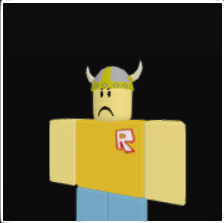
Giant - A enemy that is like a noob but 10x more health and can charge at you with a lot of speed.
Damage - 25 with all attacks.
Health - around 2500.
Skills - first one, punches with his fists, second one, makes a clap that makes a vertical shockwave. Third attacks - he stomps and makes a horizontal shockwave, and fourth one, he makes a dash towards a player, can instanly kill player and also deals 690 damage to titan if you use reflector.
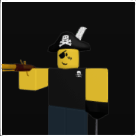
Captain - A second boss of the game, moves super fast and mostly shoots from flintlock pistol, can be parried but is hard to do so.
Health - 6250.
Damage - 15 with flintlock bullet, 30 with blunderbuss burst, 50 with explosive barrel.
Skills - FLintlock Burst - captain uses his flintlock and shoots three bullets for 15 damage, bullets can be parried. Blunderbuss - shoots an large spread fo bullets that deals 30 damage and hard to parry, can be interrupted by painball gun. Explosive Barrel - captain uses his explosive barrel and throws it at the player, can explode and deals 50 damage, cna be activated by captain's bullet. Pirate's swiftness - his passive, lets him dash out from player when he's close to him and jumps and dashes faster than player.
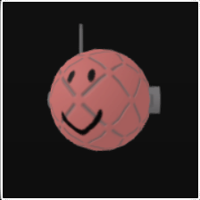
Killbot - A first flying enemy ingame that shoots rockets
Damage - around 30 with projectile and 35 with kamikaze passive.
Health - around 150.
Skills - shoots rocket that lands at marked spot. Kamikaze - when dies drops of a sky and explodes.
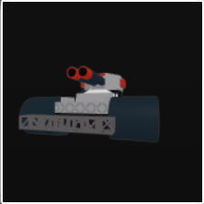
Cannon - A second miniboss in game, a tank that shoots 3 big mortars .
Damage - around 40 per mortar.
Health - around 5000.
Skills - shoots 3 big mortars.
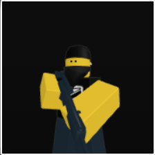
Mark - An ranged enemy that is a sniper that points a red laser at player and after 6.5 seconds shoots him.
Damage - 30 parry counter, 20 with air dash, 20 with 1st and 3rd slashes, 30 with 4th slash, 20 with slide spin, 35 with slam, 25 with gale slashes, 40 vagabond vengeance, and 35 with tempest.
Health - around 12000, + 3000 per extra player.
Skills - Parry stance - if he was hit melle while circle starfing.
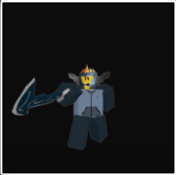
Vagabond - A third boss of the game, moves super fast and mostly does melle attacks.
Health - 6250.
Damage - 15 with flintlock bullet, 30 with blunderbuss burst, 50 with explosive barrel.
Skills - Slam - vagabond jumps and slams the ground, can be parried. Gale slashes - vagabond dashes and attacks with three projectiles that explode on contact. vengeance - This attack is unlocked in Phase 2. long blue semi-transparent blade sword appears while he winds up. Vagabond then floats upwards while spin-slashing, dealing 35 damage and knocking the player away. This attack has 2 versions: Close Tempest and Quick Tempest,
Quick Tempest - he dashes towards the player and does a quick slash.
Close Tempest - if the player is close to him, he does a long slash that can be parried.
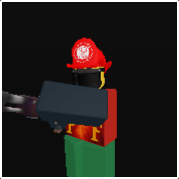
Fireman - A flamethrower guy.
Health - 450 and 50 for his canister.
Damage - 12 per second.
Skills - shoots a stream of fire that deals damage over time, cannot be parried.
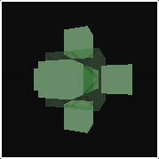
Beacon - A stationary enemy that shoots homing beams.
Health - 850.
Damage - 30.
Skills - shoots homing beams at the player, and also can fly and support enemies to make them invincible, also there is a types of them
Green beacon - a weaker version of the standard beacon, can support lower units without limit, also if he kills he's ally accidenlty wiht beam, he becomes enraged, and
Black beacon - Deactivated one, does nothing until it activates.
Blue beacon - the same as the green beacon.
Enraged beacon - becomes enraged after killing an ally by mistake, he would shoot his beams faster.
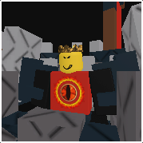
King - A third miniboss with high health and damage.
Health - 15000.
Damage - 20, 25, 30, 35, 40.
Skills - sword swing - when player is too close, he slashes with his sword, stab - when sword swing is cooldown, he stabs with his sword, . Lunge and smash - he lowers hte sword before doing a dash and luging at the high speed at his target, Leap - he jumps high into the air and crashes down on the player, also knockbacking player, Eruption - he swins his sword and does a series of shockwaves that knockback the player, Cannon Barrage - he fires a barrage of 8 cannonballs at the player, that fly on a red mark
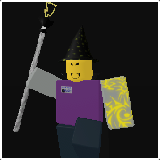
Wiward - A wizard who can fly and cast spells.
Health - 3000.
Damage - 30 with thunderspell, 30 with mana burst, 25 with homing projectile, 50 with kamikaze.
Homing Volley - fires a spread of 8homing projectiles at the player that can be parried and also explodes on impact. Thunderpspell - wizard teleports to you and does a quick thindrstorm with also showng a red mark. Mana burst - wizard fires a powerful continous beam of lighting that deals significant damage Kamikaze - when wizard dies she will esplode.
BOSS PAGE4!11!!
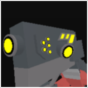
GreatDrakobloxxer - A fourth boss of the game, A titanic cybernetic dragon who doesn't move.
Health - 55000, + 13750 per extra player
Damage - 60 with sword Thrust, 50 with tail swipe, 60 with sword slam, 60 with pole direct hit, 40 with sword slash, 40 with rocket pod, 35 with mega rocket, 35 with slam shockwave, 25 with 2nd laser hit, 30 with pole shockwave and 30 with 1st laser hit
Skills - Primordial Roar - GreatDrakobloxxer roars and deactivates every utilitty gear for 10 seconds. Tail Swipe - GreatDrakobloxxer swings its tail in a wide arc, dealing damage and knocking back players, also if superparried it deals 4875 damage to drakobloxxer. Infernal BUrst - GreatDrakobloxxer ducks down and fires a concentrated yellow energy beam from its mouth and tracking people, dealing high damage, while also hitting twice. Pocked Pods - GreatDrakobloxxer launches a barrage of missiles that home in on players, dealing significant damage on impact, cant be parried and also be marked with a red circle. Mega Missiles - Drakobloxxer shoots multiple mega rockets that stalks player everywhere, whenever he's in air or not. explodes on impact, also it deals 1500 damage to drakobloxxer if rocket was parried by sword, 2250 with firebrand, and 3750 with hammer. Pole Launch - drakobloxxer launches a 4 - 6 poles that lands on ground and when on ground creates a shockwave that deals damage and knockbacks high player, also uses this attacks just before tail sweep. Chomp - whenever player is close or on his head he will chomp and bite player, can be superparried only with reflector and does 4875 damage to drakobloxxer, Sword thrust - drako will swith open his blade and prepares for thrust and thruts to the nearest enemy and also can be parried, 4675 damage to drakobloxxer with wrench, 6800 with sword katana or scatterblaster, 10625 with firedbrand trowel or hammer and 11675 with ballistic shield, and finally new attack sword slam - drako swith opens his blade and slams down towards the nearest player, creating big shockwave also can be parried.
Phase 2 - When GreatDrakobloxxers first hp bar depletes, he becomes more aggressive and has buffed primordial roar, and will perform two attacks at once for the rest of fight, excluding primordial roar.
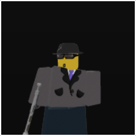
Smith - A lower user that shoots from his guns.
Health - 600.
Damage - 25 with homing shot, 25 with red round burst, 30 raygun bash, and 50 with charge kick
Skills - Blue homing shot - smith shoots a homing bullet that slightly homes to the player, Red round burst - smith fires a burst of red rounds that deal damage to the player, also while he is charging his weapon you can interrup him, causing his gun to explode and do a big damage to smith and nearby enemies, Raygun Bash - smith swings his raygun in a wide arc, dealing damage and knocking back players when they are to close ot him, CHarge kick - smith charges at a player and kicks with his leg and knockbacks the player. Can be parried. Fleejump - Smith does a high jump to go farther from the player and deals no damage to player.
Hunter - A jason that has came back for revenge.